Как читать авторский курс и нормативные материалы
Это учебные материалы, а не заключение о соответствии конкретного продукта. Организационные модели курса отделяйте от терминов стандарта: ППК в опубликованном проекте — машиночитаемый перечень, а живой реестр его версий является практикой сопровождения. Термин OSA в разных материалах имеет разный охват. Статус и обязательность нормативного документа проверяются отдельно; проект КАПО опубликован как проект первой редакции.
Конспект: термины, угрозы и границы SCA OSA
Зачем модуль
В переписке и в отчётах слова SCA, OSA, SBOM, ППК, VEX, VDR используют как синонимы, и из-за этого ломается коммуникация. Кто-то пишет «у нас есть SBOM, значит SCA закрыт» — а SBOM это только перечень, без сопоставления с уязвимостями он ничего не закрывает. Кто-то называет «VEX-ом» список найденных CVE — а VEX это, наоборот, утверждение о применимости, чаще со словом «не затрагивает». Модуль фиксирует точные определения и одну ключевую границу: SCA отвечает на вопрос «что у нас внутри и чем это опасно», OSA — на вопрос «можно ли вообще доверять источнику этого кода». Перепутать их означает закрыть не ту угрозу.
Ключевые идеи
Семь терминов, которые путают. Различия проще держать через ось «факт → решение» и ось «состав → доверие».
| Термин | Расшифровка | Что это по сути | Пример из жизни |
|---|---|---|---|
| SCA | Software Composition Analysis | Процесс: выявить состав ПО и сопоставить его с уязвимостями и лицензиями | «У log4j-core версия 2.14.1 — это CVE-2021-44228» |
| OSA | Open Source Analysis / Application Security для OSS | Шире SCA: ещё и происхождение, доверие к источнику, политика приёмки, контролируемый репозиторий | «Пакет скачан с зеркала, подпись не сверена — не принимать» |
| SBOM | Software Bill of Materials | Машинный артефакт-перечень компонентов (CycloneDX, SPDX, SWID) | JSON со списком purl и версий |
| ППК | Перечень покупных (заимствованных) компонентов | Российский аналог понятия BOM в терминах ГОСТ; состав заимствованного ПО | Таблица сторонних библиотек в составе изделия |
| SCS | Supply Chain Security / Software Composition Security | Зонт над безопасностью самой цепочки: подпись, provenance, целостность | SLSA-уровень сборки, in-toto attestation |
| VEX | Vulnerability Exploitability eXchange | Утверждение применимости уязвимости: затрагивает / не затрагивает / уже исправлено | «CVE-2021-44228 — not_affected, JNDI-путь не вызывается» |
| VDR | Vulnerability Disclosure Report | Отчёт о найденных уязвимостях компонентов — список фактов до решения | Выгрузка findings из портфеля SBOM |
Самая частая ошибка VDR и VEX — не одно и то же и даже не уровни одного. VDR это «что нашли» (факт, машинный список). VEX это «что это для нас значит» (решение человека о применимости). VDR без VEX заваливает команду ложными срабатываниями; VEX без зафиксированного VDR — решение без доказательной базы.
Где заканчивается SCA и начинается OSA. SCA берёт артефакт сборки и говорит про его внутренности: компоненты, версии, лицензии, CVE. OSA добавляет вопрос про входную дверь: откуда этот компонент попал в сборку, не подменён ли он, подписан ли, разрешён ли политикой. В ГОСТ Р 58412-2019 это ровно две разные угрозы: внедрение уязвимости через заимствованный сторонний компонент (п. 5.3.2 — зона SCA) и внедрение уязвимости в программу в процессе её поставки (п. 5.5.1 — зона OSA/SCS). Один сканер версий не закроет вторую.
Как выглядит на практике
SCA-факт живёт во фрагменте SBOM (CycloneDX), а VEX-решение — рядом, но в отдельном поле:
{
"components": [
{ "type": "library", "name": "log4j-core", "version": "2.14.1",
"purl": "pkg:maven/org.apache.logging.log4j/log4j-core@2.14.1" }
],
"vulnerabilities": [
{ "id": "CVE-2021-44228",
"affects": [ { "ref": "pkg:maven/.../log4j-core@2.14.1" } ],
"analysis": { "state": "not_affected",
"justification": "code_not_reachable" } }
]
}
Здесь components — это SBOM (факт SCA), запись в vulnerabilities без analysis была бы VDR, а блок analysis.state — это VEX (решение). OSA в этом JSON не виден: доверие к purl (что библиотека пришла из контролируемого репозитория, а не с подменённого зеркала) проверяется отдельно — подписью и provenance.
Модель угроз цепочки поставки

Голубые угрозы (T1, T2) ловит SCA — анализом состава. Оранжевые (T3, T4) — зона OSA/SCS: целостность поставки и доверие к среде сборки.
Слепые зоны именно этой темы
- «SBOM = безопасность». SBOM это инвентарь, не вердикт. Без сопоставления с CVE/БДУ и без VEX он не уменьшает риск.
- Protestware ≠ CVE. Самоповреждающий пакет (логические бомбы по гео-признаку) не имеет CVE и не ловится списком версий — это аргумент в пользу OSA и контроля источника, а не очередного SCA-скана.
- Транзитивные зависимости. Угроза 5.3.2 чаще приходит не через прямую зависимость, а через зависимость зависимости, которую человек глазами не выбирал.
- VEX-инфляция. Массовый
not_affectedбез обоснования (justification) — это не управление риском, а его маскировка.
Связь с нормативкой
- ГОСТ Р 58412-2019 — модель антропогенных угроз при разработке: внешние и внутренние нарушители, угрозы 5.3.2 (заимствованные компоненты) и 5.5.1 (поставка).
- ГОСТ Р 56939-2024 — меры РБПО, которые эти угрозы нейтрализуют.
- OWASP Top 10 A06 — Vulnerable and Outdated Components как прикладная формулировка.
- Шаблоны: Минимальный набор полей ППК, Паспорт open source библиотеки.
Что уносим в работу
- На каждом findings-артефакте уметь различить четыре сущности: состав (SBOM/ППК), факт уязвимости (VDR), решение о применимости (VEX), доверие к источнику (OSA/SCS).
- Не называть SBOM «результатом SCA» — это его вход, а не вывод.
- Любой
not_affectedсопровождатьjustification, иначе это не VEX, а отписка → П09. - Проверять не только версии, но и происхождение пакета → П17.
- Тренировать чтение CycloneDX руками, чтобы видеть границу полей
components/vulnerabilities/analysis→ П02.